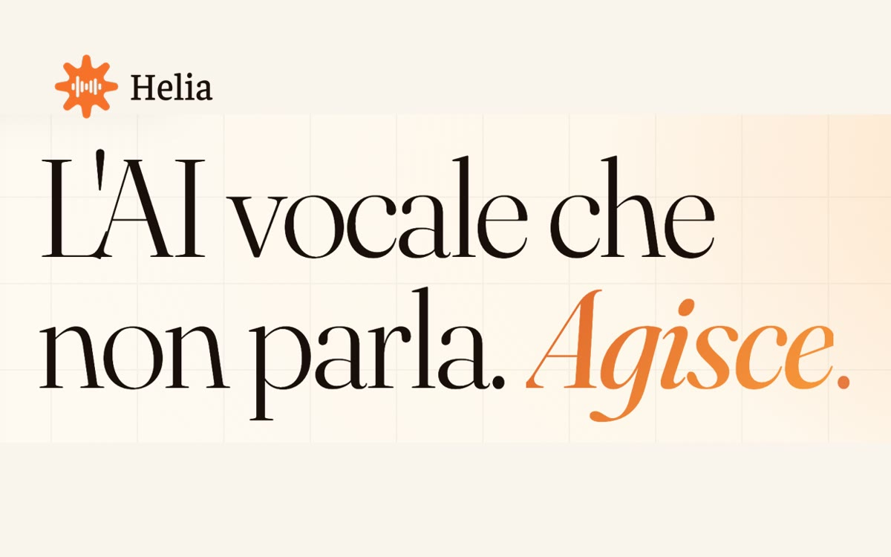

Helia.
L’AI vocale che agisce.
L’agente vocale AI nato in LAIF per il customer care delle aziende: risponde, organizza la conoscenza e passa al team solo quando serve.

Da un bisogno
prende forma un’idea.
Chiamate e messaggi arrivano a ogni ora. Molti chiedono informazioni che l’azienda ha già: il problema è rispondere bene, subito, e tenere traccia di tutto.
Il progetto.
Helia, parte del gruppo LAIF, gestisce le richieste dei clienti su più canali: telefono, WhatsApp ed email. Costruisce per ogni azienda una knowledge base che si arricchisce a ogni interazione, e si integra con CRM, ERP e calendario per fissare appuntamenti e aggiornare i sistemi.
- Centralino AI, triage telefonico e customer care
- Passaggio al team con tutto il contesto della conversazione
- Integrazione con i sistemi aziendali già in uso
Dal team LAIF al primo prodotto verticale.
La conversazione in cui LAIF racconta la nascita del suo primo prodotto verticale: uno spin-off pensato per rispondere a un bisogno concreto di mercato e crescere con logiche nuove.
Il valore di
costruire insieme.
Un ecosistema è anche un luogo di apprendimento: competenze di prodotto, integrazione e adozione si incontrano con problemi diversi.
Torna all’ecosistemaHai un processo che merita di funzionare meglio?
Raccontaci quale attività vuoi migliorare, chi è coinvolto e quali strumenti usate. Da qui definiamo il primo passo.
Parliamoci